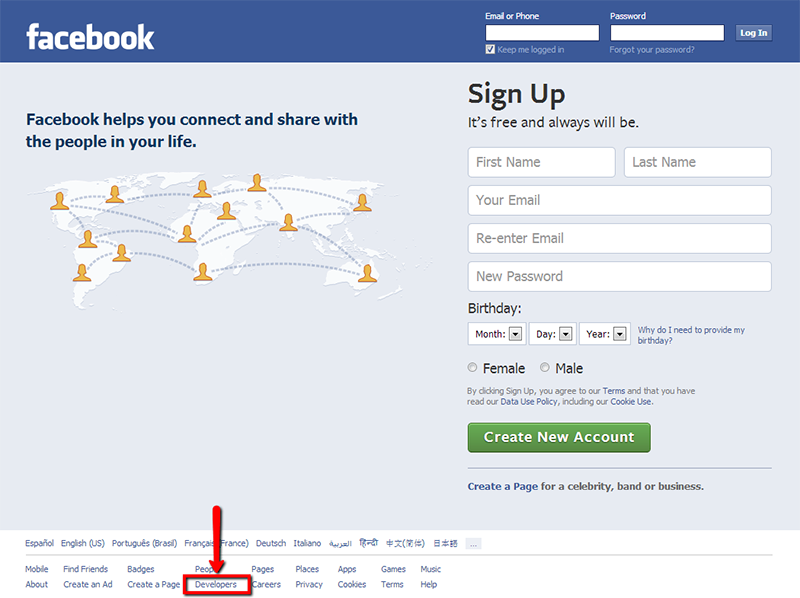
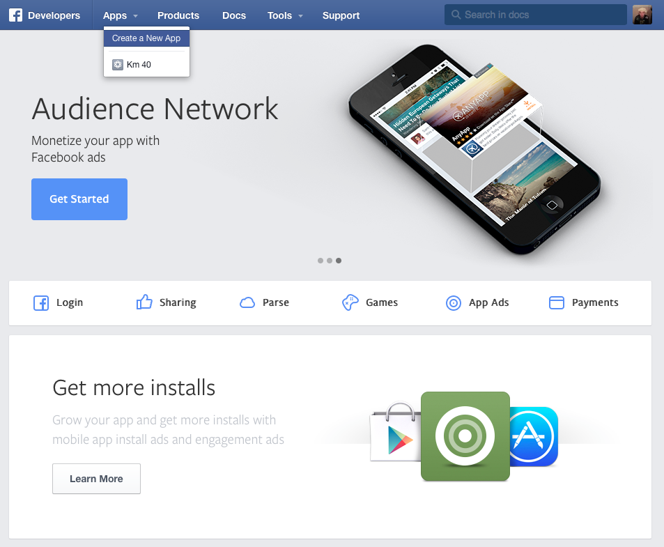
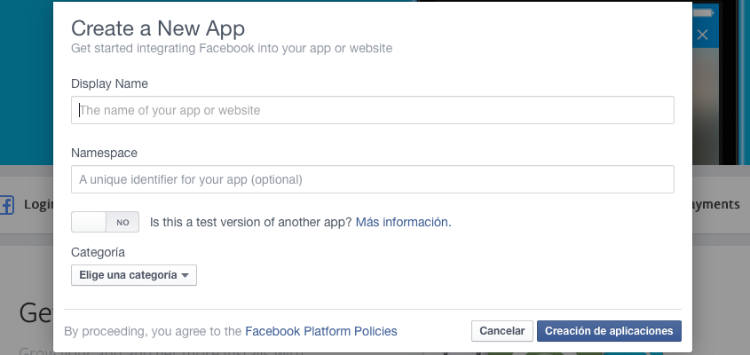
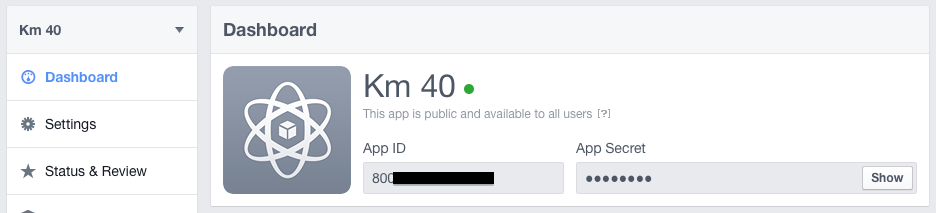
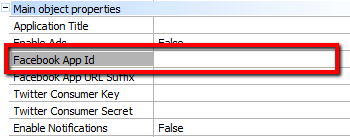
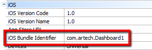
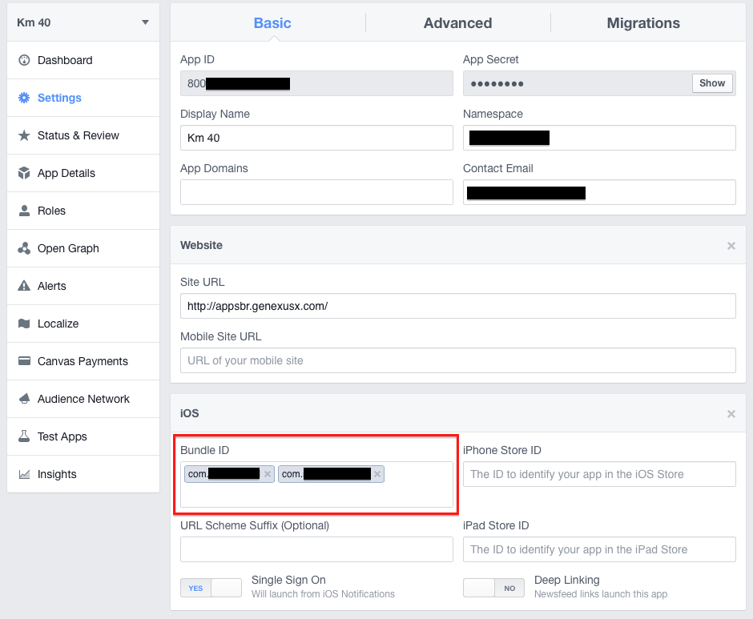
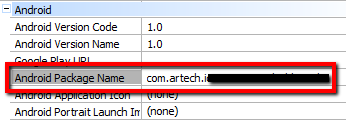
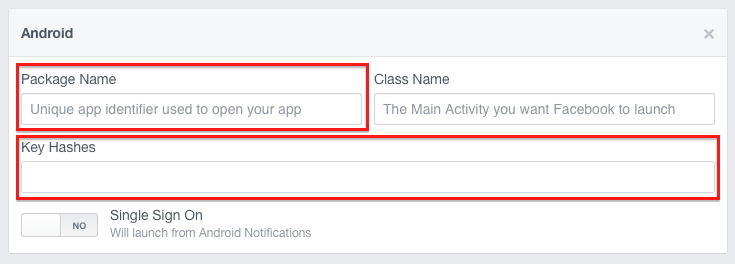
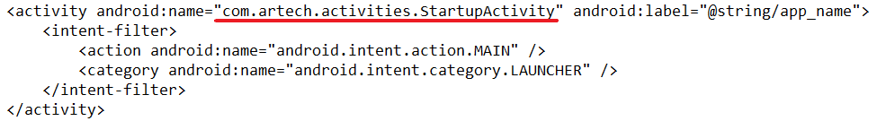

You must register the Facebook application to use the Facebook features offered by GeneXus in the Smart Device Generator.
This document will show how to do this in a few steps.
In the main screen of the Facebook Home Page go to the Developers Center.

You will be requested to sign in with a valid Facebook Account.
In some cases, you may have to validate your account. The following link can be very helpful to complete this step: http://developers.facebook.com/blog/post/386/
Once you have logged in to your Facebook developer home page with a valid Facebook developer account, click on the Apps button and then choose Create a New App.

Complete the information requested about the App.
Note: Only providing a valid app Name is mandatory; any other information is optional.

The last step is to connect your Smart Device application with your Facebook Application. This has to be done in two places.
a- In GeneXus:
Copy the Facebook AppID value (in Facebook web site) to the Facebook App Id property of the Main Program, as shown in the figure.
 
b- In Facebook:
Open your application and click on the Settings option. Now on the basics settings add the platforms that you need by clicking the Add Platform button.
In case it is for IOs, we need to:
Enter in the iOS Bundle ID the value of the iOS Bundle Identifier property of your GeneXus' main object.


And in case it is for Android we need:
The package name is on the Android Package Name property on the Android Group of the Main object.

And the key hash.
Note: If we are signing the application with the default keystore, the key hash is qzImOU1ch6oucyE6hr8s9GbTgys=
To get the key hash (if you are not using the default) we need to know:
-Where is the keystore file (in this example is "C:\my-release.keystore")
-The alias in keystore (in this case is "alias_name")
-The path to keytool (in this case is "C:\OpenSSL-Win32\bin\keytool.exe")
-The path to openssl (in this case is "C:\OpenSSL-Win32\bin\openssl")
-The password to keystore (In this case is "artech")
With this, we run this code in cmd:
"C:\Program Files\Java\jdk1.6.0_25\bin\keytool.exe" -exportcert -alias alias_name -keystore C:\my-release.keystore | C:\OpenSSL-Win32\bin\openssl sha1 -binary | C:\OpenSSL-Win32\bin\openssl base64>keyhash.txt
This will leave the key in a file called keyhash.txt.

If you need to add "class name", this value is in the AndroidManifest.xml, it must be the class that contains the main action:

| Backlinks | |
| Facebook Button control | Facebook external object |
| HowTo: Request data from Facebook using Graph API and Access Token | HowTo: use share action for the Image Gallery |